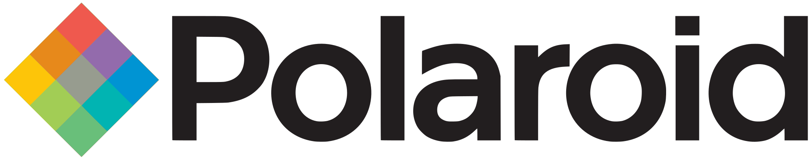
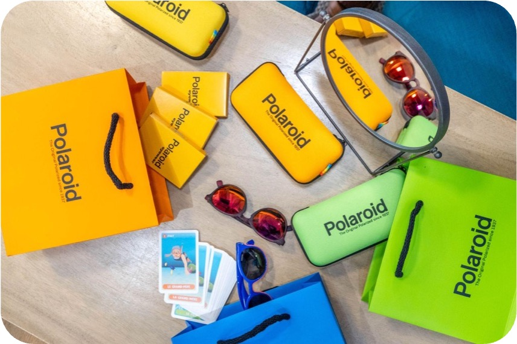
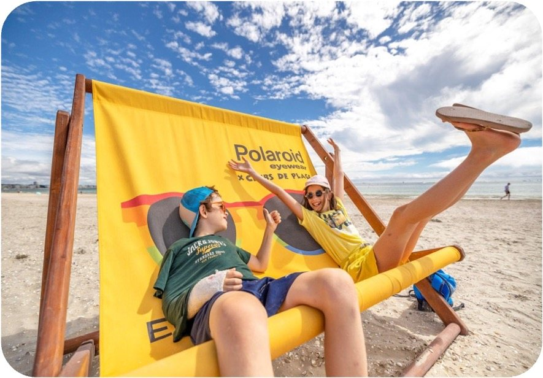

Objectif
Retour aux références
Polaroid Eyewear · 2022
Polaroid Eyewear - Activation été
Activation terrain, opticiens, clubs de plage, digital local
Projet réalisé dans le cadre du parcours professionnel antérieur de Lucie Ramon.


Polaroid EyewearActivation terrain, opticiens, clubs de plage, digital localPilotage d'expériencesPreuve image
Polaroid EyewearActivation terrain, opticiens, clubs de plage, digital localPilotage d'expériencesPreuve image
Étude de cas
Contexte
Polaroid s'est appuyé sur les enfants comme prescripteurs pour créer de la visibilité dans les clubs de plage et en points de vente opticiens.
Rôle de Lucie
- Stratégie globale d'activation été : terrain, opticiens et digital.
- Coordination de 90 clubs de plage et 66 villes du littoral.
- Production des supports visuels clubs et magasins.
- Déploiement du partenariat avec 66 opticiens et campagne sponsorisée géolocalisée.
Matière visuelle


Chiffres & faits marquants
90 clubs de plage activés dans 66 villes
66 opticiens partenaires
+1,5M contacts terrain estimés
+18K enfants dotés de goodies
+2,2M reach digital estimé
+480 selfies postés
Transformation magasin estimée : +12%
Référence suivante